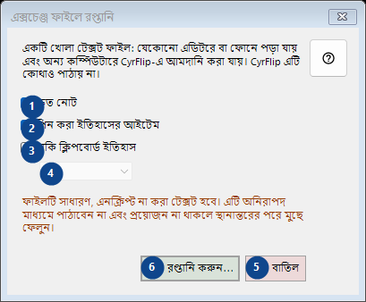
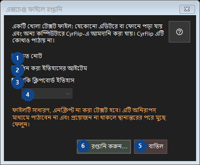

এক্সচেঞ্জ ফাইলে রপ্তানি
এর কাজ
নম্বর দেওয়া ব্যাখ্যাগুলি পড়ুন, প্রয়োজনীয় মান বেছে নিন এবং উইন্ডোর নির্দেশ দিয়ে এগিয়ে যান।


ব্যবহারের ক্রম
নম্বর দেওয়া ব্যাখ্যাগুলি পড়ুন, প্রয়োজনীয় মান বেছে নিন এবং উইন্ডোর নির্দেশ দিয়ে এগিয়ে যান।
উপাদান
1. দ্রুত নোট
উল্লিখিত কাজের জন্য এই নির্দেশ ব্যবহার করুন। মেনে নেওয়ার আগে নিশ্চিতকরণ পড়ুন।
আপনার শর্টকাট2. পিন করা ইতিহাসের আইটেম
উল্লিখিত কাজের জন্য এই নির্দেশ ব্যবহার করুন। মেনে নেওয়ার আগে নিশ্চিতকরণ পড়ুন।
আপনার শর্টকাট3. বাকি ক্লিপবোর্ড ইতিহাস
উল্লিখিত কাজের জন্য এই নির্দেশ ব্যবহার করুন। মেনে নেওয়ার আগে নিশ্চিতকরণ পড়ুন।
আপনার শর্টকাট4. একটি খোলা টেক্সট ফাইল: যেকোনো এডিটরে বা ফোনে পড়া যায় এবং অন্য কম্পিউটারে CyrFlip-এ আমদানি করা যায়। CyrFlip এটি কোথাও পাঠায় না।
পাশের লেবেল অনুযায়ী মান বাছুন বা লিখুন। এগোনোর আগে পরীক্ষা করুন। এই উপাদান এখন উপলব্ধ নয়। আগে বৈশিষ্ট্য চালু করুন বা একটি এন্ট্রি বাছুন।
আপনার শর্টকাট5. বাতিল
উল্লিখিত কাজের জন্য এই নির্দেশ ব্যবহার করুন। মেনে নেওয়ার আগে নিশ্চিতকরণ পড়ুন।
আপনার শর্টকাট6. রপ্তানি করুন...
উল্লিখিত কাজের জন্য এই নির্দেশ ব্যবহার করুন। মেনে নেওয়ার আগে নিশ্চিতকরণ পড়ুন।
আপনার শর্টকাট